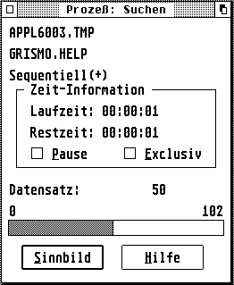
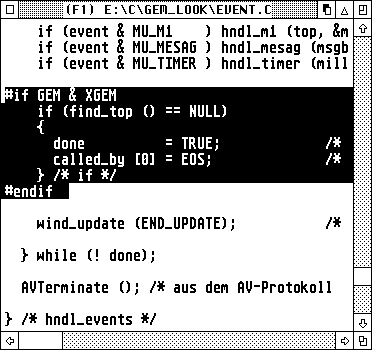

Wenn man mehrere GEM-Applikationen der gleichen Kategorie betrachtet, so fällt auf, daß einige Programme leicht und andere wiederum sehr schwer zu bedienen sind. Eine Textverarbeitung wie z.B. Papyrus dürfte sicherlich von den meisten Anwendern problemlos zu bedienen sein; ganz im Gegensatz zu Programmen wie Signum!2, das vielen Benutzern den Angstschweiß auf die Stirn treibt.
Ob ein Programm leicht zu bedienen ist, hängt in hohem Maße von der Gestaltung der Benutzerschnittstelle ab. Dieses Kapitel versucht einige Tips zur Gestaltung des User-Interfaces zu geben, und behandelt die folgenden Punkte bzw. Aspekte:
Allen Software-Entwicklern wird dringend empfohlen, den hier gemachten Empfehlungen Folge zu leisten bzw. sich an vorbildlichen GEM-Applikationen zu orientieren. Die Akzeptanz eines Programms (und damit der Verkaufserfolg) hängt neben der Funktionalität zu einem großen Teil von der Gestaltung der Benutzerschnittstelle ab.
Beispiele für Fehler im GUI-Design bzw. eine schlechte Benutzerführung findet man unter http://www.iarchitect.com/mshame.htm.
Bei der Gestaltung der Dialogboxen sollte ein Software-Entwickler auf eine innere und äußere Konsistenz achten, d.h. er sollte sich an vorbildlichen Dialogboxen anderer Programme orientieren (äußere Konsistenz), und darauf achten, daß innerhalb seiner Anwendung die Dialogboxen ein einheitliches Outfit erhalten (innere Konsistenz).
Die folgende Liste nennt beispielhaft einige Aspekte, die beim Design von Dialogboxen beachtet werden sollten:
gleicher Aufbau aller Dialogboxen der Applikation
möglichst gleicher Aufbau der Dialogboxen aller Applikationen
jeder Dialog sollte eine in sich abgeschlossene Teilaufgabe
behandeln
für gleiche Aktionen einheitliche Buttons verwenden
Informationen in logische Blöcke aufspalten
überflüssige Informationen weglassen
nicht zu viele Objekte auf einer Ebene verwenden
aktivierbare Elemente deutlich von Anzeigen trennen
Spezialeffekte und Farben sehr überlegt und sparsam einsetzen
Darüber hinaus sollte man sich genau überlegen, welche Art von Dialog für welchen Zweck eingesetzt wird. Hier lassen sich die folgenden Dialogarten unterscheiden:
Alertboxen werden eingesetzt, um den Benutzer über wichtige Ereignisse zu informieren, oder um Rückfragen an ihn zu stellen. Sie informieren in knapper Form über den Sachverhalt, und bieten ggfs. mehrere Alternativen, um auf diesen zu reagieren. Die Abbildung oben zeigt eine Alertbox, die zur aktiven Unterstützung von Multitasking in ein Fenster gelegt wurde.
Modale Dialogboxen sollten immer dann benutzt werden, wenn der Benutzer zu einer sofortigen Aktion gezwungen werden muß bzw. soll. Der Anwender kann erst dann in der Applikation weiterarbeiten, wenn er den entsprechenden Dialog verlassen hat. Die Abbildung oben zeigt eine modale Dialogbox, die zur aktiven Unterstützung von Multitasking in ein Fenster gelegt wurde. Modale Fensterdialoge können vom Benutzer anhand des fehlenden Closers der Fensterkomponenten erkannt werden.
Unmodale Dialogboxen sollten eingesetzt werden, wann immer dies möglich ist. Ein solcher Dialog existiert wie ein Fenster parallel zum eigentlichen Programm, und bietet dem Anwender ein Maximum an Flexibilität. Die Abbildung oben zeigt eine nicht-modale Dialogbox, die zur aktiven Unterstützung von Multitasking in ein Fenster gelegt wurde. Nicht-modale Fensterdialoge können vom Benutzer anhand des Closer in den Komponenten des Fensters erkannt werden.
Wichtig: Damit in einer Multitasking-Umgebung alle Applikationen zu jeder Zeit ungehindert Ausgaben auf dem Bildschirm tätigen können, sollten die Alert- und Dialogboxen eines Programms unbedingt in Fenster gelegt werden. Einige Applikationen (z.B. der Resource-Editor Interface) erlauben es, jederzeit zwischen konventionellen Dialogen und Fensterdialogen umzuschalten; diese Möglichkeit sollte jedoch nur dann angeboten werden, wenn es wirklich notwendig ist. Im Hinblick auf zukünftige bzw. bereits bestehende, Multitasking-fähige TOS-Versionen, werden koventionelle Dialoge nur noch eine untergeordnete Rolle spielen.
Querverweis: AES Fensterdialoge Formulare
Mit steigender Komplexität einer Software steigt auch die Notwendigkeit der aktiven Anwenderunterstützung, durch ein überlegt implementiertes Hilfesystem.
Neben der Entlastung des Langzeitgedächtnisses sollte solch ein System dem Anwender die 4 folgenden Fragen beantworten:
Ein sehr gutes Hilfesystem bietet die relationale Datenbank Phoenix der Firma Application Systems Heidelberg (ähnliches bieten auch Pure-C, Grismo oder der ST-Guide).
Prinzipiell arbeitet solch ein System wie folgt: Die gewünschten Informationen werden in einem Fenster angezeigt, und durch optisch hervorgehobene Querverweise lassen sich per Mausklick jederzeit weitere Informationen zu bestimmten Themen ermitteln. Über ein Inhaltsverzeichnis ist es möglich wie in einem Buch zu bestimmten Themen zu springen, ein Index ermöglicht die gezielte Suche einer bestimmten Information.
Bewährt hat sich vor allem die kontext-sensitive Hilfe: Hierunter versteht man eine Hilfestellung, die sich auf die augenblickliche Situation bezieht.
Ist beispielsweise ein Fenster oder eine Dialogbox geöffnet, so erscheint beim Aufruf des Hilfesystems eine Erklärung zu genau diesem Fenster bzw.
Bei der Entwicklung eines Hilfesystems für eine Applikation sollten die folgenden Punkte berücksichtigt werden:
in jeder Dialogbox sollte sich ein Hilfe-Knopf
befinden, bei dessen Betätigung Informationen über genau diesen
Dialog erscheinen.
in jeder Fehlermeldung sollte sich ein Hilfe-Knopf
befinden, bei dessen Betätigung dem Benutzer erklärt werden soll,
warum der Fehler aufgetreten ist, und wie er sich beheben läßt.
ist ein Fenster der Applikation (und keine Dialogbox)
geöffnet, so muß zu diesem Fenster eine Hilfemeldung ausgegeben
werden. In diesem Zusammenhang sei darauf hingewiesen, daß auch die
Funktionsweise des Hilfesystems selbst erklärt werden muß.
falls keine Fenster bzw. Dialogboxen geöffnet sind, und auch keine
Objekte (z.B. Icons) der Applikation selektiert sind, so sollte eine
generelle Hilfe zum Programm selbst eingeblendet werden.
Jeder Hilfetext sollte mindestens die folgenden Informationen beinhalten:
auf welches Objekt bezieht sich die Hilfe (Fenster, Dialogbox,
Icon etc.) ?
welche Aktionen können an bzw. mit diesem Objekt ausgeführt
werden?
Die von vielen Software-Entwicklern geäußerte Angst, durch ein zu gutes Hilfesystem das Raubkopieren zu unterstützen, ist zwar verständlich, sollte aber nicht auf Kosten der ehrlichen Anwender ausgetragen werden.
Querverweis: AES Fensterverwaltung
Auch ein relativ unscheinbares Objekt wie der Mauszeiger hat in einem System mit grafischer Benutzeroberfläche eine wichtige Bedeutung. Sowohl die Anzahl der Mausklicks, als auch die Form des Mauszeigers sind für den Anwender eines Programms von besonderem Interesse.
Es hat sich eingebürgert, je nach auszuführender Operation dem Mauszeiger eine bestimmte Form zuzuordnen; im einzelnen:
| Form des Mauszeigers | Bedeutung |
| Pfeil | allgemeine Bedienung (Regelfall) |
| Balken | Texteingabe |
| Biene bzw. Sanduhr | der Computer ist mit einer Operation beschäftigt, |
| und der menschliche Benutzer kann während der | |
| Ausführung dieser Aktion nichts machen | |
| Zeigefinger | Auswahl oder Dimensionierung |
| flache Hand | Verschieben oder positionieren von Objekten |
| Fadenkreuz, dünn | Zeichnen oder Auswahl |
| Fadenkreuz, dick | keine feste Bedeutung |
| Fadenkreuz, Umriß | keine feste Bedeutung |
Darüber hinaus läßt sich der Mauszeiger auch komplett abschalten; dies ist z.B. bei der Ausführung von Zeichenoperationen sinnvoll, um Pixelmüll zu vermeiden. In besonderen Fällen kann die Form des Mauszeigers auch frei definiert werden; dabei sollte die neue Form des Mauszeigers allerdings immer zur jeweiligen Situation passen.
Als Faustregel gilt, daß der Mauszeiger außerhalb des Arbeitsbereiches des eigenen Fensters immer die Form eines Pfeils besitzen sollte.
Auch über die Anzahl der Mausklicks gibt es einiges zu berichten. Ein einfacher Klick dient i.a. dazu, bestimmte Elemente auszuwählen. Das könnten Elemente einer Dialogbox (Checkboxen, Radiobuttons, etc.), Icons auf dem Desktop einer Shell, aber auch die Komponenten eines Fensters sein. In vielen Fällen lassen sich über einen einfachen Klick weitere Aktionen auslösen. Wird der Mausknopf beispielsweise nicht losgelassen, so können Objekte wie Icons verschoben werden, oder es läßt sich eine ganze Gruppe von Objekten auswählen, d.h. selektieren.
Ein Doppelklick leitet meist eine spezielle Operation ein; der Desktop startet beispielsweise ein Programm, wenn auf das zugehörige Sinnbild doppelt geklickt wird.
Prinzipiell stehen neben dem Einfach- und Doppelklick auch Drei- oder Vierfachklicks mit der Maus zur Verfügung. Von diesen Varianten ist jedoch dringend abzuraten, da es vielen Menschen erhebliche Probleme bereiten dürfte, innerhalb eines bestimmten Zeitintervalls die entsprechende Anzahl von Mausklicks auszuführen.
Last but not least lassen sich Mausklicks auch in Zusammenhang mit der Tastatur (Alternate, Control, Shift) einsetzen. Ein Mausklick in Verbindung mit einer Shift-Taste sorgt i.a. dafür, daß weitere Objekte ausgewählt werden können. Die Shell Gemini öffnet bei einem Doppelklick auf ein Icon und gleichzeitig gedrückter Alternate-Taste, ein Fenster mit dem zu diesem Icon gehörenden Verzeichnis.
Querverweis: graf_mouse
Die Gestaltung der Menüs ist in hohem Maße mitverantwortlich für die Übersichtlichkeit und Benutzerfreundlichkeit einer Applikation. Deshalb sollte sich jeder Software-Entwickler genügend Zeit nehmen, um diese sinnvoll und ansprechend zu gestalten.
Wie bereits erwähnt ist die Kapazität des Kurzzeitgedächtnisses beschränkt. Aus diesem Grund sollte eine Menüzeile möglichst nicht mehr als sieben Menü-Punkte anbieten; anderenfalls muß ein Benutzer mehrere Male auf die Menüzeile blicken, um entscheiden zu können, welche Auswahl er treffen will. Die folgende Abbildung zeigt die Hauptmenüzeile des relationalen Datenbanksystems Phoenix:
MANAGER Datei Bearbeiten Prozeß Parameter Optionen Hilfe
Sowohl die Menüzeile als auch die darin enthaltenen Menüs sollten einen Standardaufbau besitzen, damit sich ein Anwender nach dem Starten eines Programms sofort "heimisch" fühlt. Das erste Menü von links sollte stets den Namen der aktuellen Applikation tragen; dies hat in einer Multitasking-Umgebung den unschätzbaren Vorteil, durch einen kurzen Blick auf die Menüzeile die aktive Applikation identifizieren zu können.
Der zweite Menütitel sollte immer den Namen Datei besitzen, und Menüpunkte anbieten, die sich mit verschiedenen Aspekten der Ein- und Ausgabe befassen. Der unterste Eintrag in diesem Menü sollte stets die Möglichkeit bieten, das Programm zu verlassen.
Wie man in der obenstehenden Abbildung sieht, können einzelne Einträge innerhalb eines Menüs zu logischen Untergruppen zusammengefaßt werden, was erheblich zur übersichtlichkeit und Akzeptanz durch den Benutzer beiträgt.
Um unnötige Handbewegungen zwischen Tastatur und Maus zu verhindern, sollte jeder Menüpunkt auch durch eine Tastenkombination (Shortcut) aufgerufen werden können. Es handelt sich dabei meist um Control- bzw. Alternate-Sequenzen, die am rechten Rand eines Menüs angezeigt werden sollten, und dabei mindestens ein Leerzeichen Abstand zum eigentlichen Eintrag bieten. Dieser wiederum beginnt immer zwei Zeichen vom linken und eines vom rechten Rand entfernt, um genug Platz für ein Häkchen zu bieten.
Dabei spielt es keine Rolle, ob überhaupt ein solches angezeigt werden soll oder nicht. Drei Punkte hinter einem Menüpunkt deuten an, daß sich nach Auswahl dieses Eintrags eine Dialogbox (oder der Fileselektor) öffnet. Der Benutzer kann sich dann darauf einstellen, und z.B. den Mauszeiger schon in die Mitte des Bildschirms bewegen, während der Dialog aufgebaut wird.
Weitere und oft benutzte Menütitel sind Bearbeiten, Parameter, Optionen und Hilfe. Ersterer befindet sich stets rechts vom
Datei-Menü, letzterer sollte immer am rechten Ende einer Menüzeile plaziert werden. Jeder Titel sollte mit einem Großbuchstaben beginnen (der ganz links stehende Name des Programms wird komplett in Großbuchstaben angegeben), aus nur einem Wort bestehen, und als Abgrenzung zu den anderen Titeln je ein Leerzeichen nach links und rechts enthalten.
Darüber hinaus sollte man Menüeinträge immer kontext-sensitiv gestalten, d.h. ein Eintrag darf nur dann anwählbar sein, wenn dies in der aktuellen Situation des Programms möglich bzw. sinnvoll ist. So macht es beispielsweise keinen Sinn, den Menüeintrag Speichern aufzurufen, wenn es nichts zu speichern gibt. Gleiches gilt auch für einen Eintrag Schließen, der nur dann anwählbar sein sollte, wenn es auch ein Fenster bzw. einen Dialog gibt, der geschlossen werden kann.
Von der konventionellen Menüzeile abgesehen gibt es noch weitere und interessante Möglichkeiten, dem Benutzer eine Auswahl zu ermöglichen. Viele Programme (z.B. die Shell Thing oder Ease - vgl. Abbildung) stellen dem Benutzer Pop-Up-Menüs zur Verfügung um schnell zwischen verschiedenen Alternativen auswählen zu können oder eine Operation
auszuführen. Der Hauptvorteil eines Pop-Up-Menüs besteht darin, die Mauswege zu verkürzen. Das Menü erscheint einfach an der Bildschirmposition, an der ein Mausklick ausgeführt wird. Bei der Implementierung von Pop-Up-Menüs sollte man darauf achten, daß diese immer vollständig auf dem Bildschirm erscheinen.
Last but not least gibt es die Möglichkeit, eine Menüzeile im Fenster unterzubringen. Diese Methode bietet verschiedene Vorteile: erstens läßt sich auf diese Art und Weise die Hauptmenüzeile entlasten und dadurch viel übersichtlicher gestalten, zweitens ist es dadurch möglich, eine Applikation viel logischer aufzubauen. Alle Operationen die lokal auf ein Fenster wirken, wandern in das Fenstermenü, alle anderen in die globale Menüzeile.

Da man Fenster nicht nur auf dem Bildschirm verschieben, sondern i.a. auch in der Größe verändern kann, ist es möglich, daß nicht alle Titel eines Fenster-Menüs sichtbar sind. Einige Programme erlauben es daher, die Menüzeile zu scrollen. Dies ist z.B. beim Texteditor Grismo, oder beim Resource Editor Interface der Fall.
Querverweis: AES Menüfunktionen
Beim Arbeiten am Computer ist der menschliche Benutzer auf optische oder akustische Rückmeldungen angewiesen, um stets das Gefühl zu haben, die auszuführende Aufgabe zu kontrollieren, bzw. den aktuellen Stand der Bearbeitung erfassen zu können.
Das GEM bietet eine Vielzahl von Möglichkeiten, dem Anwender ein Feedbackgefühl zu vermitteln. So werden z.B. Menütitel oder Icons invertiert, wenn der Benutzer diese mit der Maus selektiert.
Akustische Rückmeldungen sind besonders im Zusammenhang mit Fehler-, bzw. Warnmeldungen sinnvoll, die in Dialogboxen angezeigt werden können.
Optische Rückmeldungen sind immer dann einzusetzen, wenn der Benutzer Objekte auf dem Bildschirm selektiert, oder eine Aufgabe mit einer längeren Bearbeitungsphase startet. Der Anwender darf niemals darüber im Unklaren gelassen werden, welche Operation gerade ausgeführt wird, und wie weit sie fortgeschritten ist. Dabei sind grafische Kontrollanzeigen i.a. den textuellen vorzuziehen, da letztere vom Benutzer erst dekodiert werden müssen.

Optische Rückmeldungen werden z.B. vom relationalen Datenbanksystem Phoenix eingesetzt, um den Benutzer über den Stand einer Abfrage zu unterrichten; die Shell Gemini benutzt diese Methode, um dem Anwender beim Formatieren von Disketten ein Zeitgefühl zu vermitteln, und der Texteditor Grismo invertiert u.a. Querverweise seines Hilfesystems, wenn der Benutzer diese mit der Maus aktiviert.
Querverweis: AES Style-Guidelines
Unter einer Selektion versteht man das Auswählen eines oder mehrerer Objekte. Auf dem Desktop lassen sich beispielsweise die Dateien eines Laufwerkfensters per Mausklick, Shift-Mausklick oder durch Aufziehen eines Gummibandes selektieren.

Grundsätzlich gelten die folgenden Konventionen:
Mausklick: Durch einen einfachen Klick mit der Maus wird das ausgewählte Objekt selektiert; bereits ausgewählte Objekte müssen wieder deselektiert werden.
Shift-Mausklick: fügt das ausgewählte Objekt in die Menge der bereits selektierten Objekte ein (bereits ausgewählte Objekte bleiben also weiterhin selektiert). Durch einen Shift-Mausklick auf ein selektiertes Objekt wird dieses aus der Menge der ausgewählten Objekte wieder entfernt.
Gummiband: Durch Aufziehen eines Gummibandes (Rubberbox) werden alle Objekte die von diesem Band geschnitten werden, selektiert; bereits ausgewählte Objekte müssen wieder deselektiert werden. Durch Kombination mit der Shift Taste können die betroffenen Objekte in die Menge der ausgewählten Objekte eingefügt werden.
Eine besonders angenehme Art der Selektion ist die Echtzeit-Selektion. Hierunter versteht man, daß der ausgewählte Bereich bereits während der Bewegung des Mauszeigers invertiert wird. Viele Programme wie Pure-C, Gemini oder Grismo nutzen diese Methode der Selektion, und scrollen dabei sogar automatisch den Inhalt des Fensters, wenn der Fensterrand erreicht wird.
Querverweis: AES Style-Guidelines
Beim Einsatz von Farben, Texteffekten etc. ist besondere Vorsicht angebracht. Hier gilt die zumeist die Devise: Weniger ist mehr !
Es kann an dieser Stelle kein Patent-Rezept, sondern nur der Ratschlag gegeben werden, sich an vorbildlichen Applikationen zu orientieren.
Speziell bei Verwendung von Farben sollte ein Software-Entwickler immer im Hinterkopf haben, daß das Farbempfinden eines Menschen sehr subjektiv ist; daraus folgt, daß es dem Benutzer möglich sein sollte, die für ihn angenehmen Farben einstellen zu können.
Eine vorbildliche Applikation in dieser Hinsicht ist z.B. das relationale Datenbanksystem Phoenix von Application Systems Heidelberg. Hier läßt sich nahezu die gesamte Benutzeroberfläche vom Anwender frei konfigurieren.
In Textdokumenten sollte darauf geachtet werden, nicht zu viele Texteffekte gleichzeitig einzusetzen bzw. zu vermischen. Auch hier gilt: Weniger ist mehr ! Doch kann diese Aussage auch nicht pauschalisiert werden: Es gibt Fälle, in denen der Einsatz mehrerer Effekte zum gleichen Zeitpunkt nicht nur toleriert werden kann, sondern sogar sinnvoll ist. In einem Hypertext-system beispielsweise müssen Querverweise dem Benutzer besonders deutlich gemacht werden. Auf nahezu allen Plattformen gilt der Standard, diese Referenzen unterstrichen, und wenn möglich, gleichzeitig auch in Farbe darzustellen. Das hat den Vorteil, daß Textstellen, die einen einfachen Effekt nutzen, trotzdem noch von Querverweisen unterschieden werden können.
Das Fehlen eines Patent-Rezeptes führt bei vielen Entwicklern zu Unsicherheit, die darin gipfelt, auf Spezialeffekte bzw. Farbe ganz zu verzichten. Das kann jedoch nicht Sinn der Sache sein ! So kann Farbe, sinnvoll eingesetzt, nicht nur zu erheblich mehr Übersichtlichkeit beitragen, sondern auch die Attraktivität einer Applikation drastisch erhöhen.
Lange Rede - kurzer Sinn: Spezialeffekte (gleich welcher Art) sollten sehr überlegt und sparsam eingesetzt werden.
Bei der Entwicklung eines Softwareproduktes tut ein Programmierer gut daran, möglichst früh den Benutzer in seine Arbeit einzubeziehen (User-Testing), und sich an vorbildlichen Programmen zu orientieren. Am sinnvollsten ist es, alle heiklen Punkte für den Anwender frei konfigurierbar zu machen !
Querverweis: AES Style-Guidelines
Da der Mensch ein Gewohnheitstier ist, wäre es wünschenswert, wenn nicht nur Dialoge und Menüs möglichst einheitlich aufgebaut werden, sondern die wichtigsten Funktionen eines Programms auch per Tastatur einheitlich aufgerufen werden könnten.
Tatsächlich gibt es eine Reihe von Befehlstasten-Kombinationen (Shortcuts) die entweder fest genormt sind, oder sich aber als quasi Standard etabliert haben; im einzelnen:
Genormt laut Beschluß der Entwicklerkonferenz (August '89):
| Tasten-Kombination | Funktion |
| Control-C | kopieren |
| Control-F | suchen |
| Control-O | öffnen |
| Control-Q | Programm beenden |
| Control-V | einfügen |
| Control-X | ausschneiden |
| Shift-"Pfeil hoch" | eine Seite zurück blättern |
| Shift-"Pfeil runter" | eine Seite vorwärts blättern |
| Shift-"Pfeil links" | Cursor zum Anfang der Zeile |
| Shift-"Pfeil rechts" | Cursor an das Ende der Zeile |
| Control-"Pfeil links" | um ein Wort zurück |
| Control-"Pfeil rechts" | um ein Wort vorwärts |
| Home | an den Anfang des Dokumentes |
| Shift-Home (Clr) | an das Ende des Dokumentes |
Nicht genormt, aber Quasi-Standard:
| Tasten-Kombination | Funktion |
| Control-A | alles auswählen |
| Control-G | nächste Fundstelle |
| Control-M | Sichern unter... |
| Control-N | Neues Dokument |
| Control-P | |
| Control-S | Sichern |
| Control-R | Ersetzen |
| Control-U | Oberstes Fenster schließen |
| Control-W | zum nächsten Fenster blättern |
| Control-Y | aktuelle Zeile ausschneiden |
| Control-Z | Shell starten |
Wichtiger Hinweis: Alle 'Alternate-Control'-Tastenkombinationen sind für das Betriebssystem reserviert. Als Beispiele seien an dieser Stelle genannt:
| Tasten-Kombination | Funktion |
| Alternate-Control-Tab | Taskwechsel unter MagiC |
| Alternate-Control-Delete | Shut-Down-Sequenz starten |
| Alternate-Control-Esc | Programm-Manager unter MagiC |
| Alternate-Control-Space | aktuelles Fenster ikonifizieren |
| dto. jedoch mit Shift | Applikation ikonifizieren |
Querverweis: Bedienung des Fileselektors ASCII-Tabelle Scan-Code Tabelle
Es kann vorkommen, daß der Platz in der Menüleiste und den Dialogboxen einer Applikation nicht ausreicht, um die volle Funktionalität darin unterzubringen.
Anstatt nun die Menüleiste zu überfüllen, oder zu viele Informationen in einen Dialog zu quetschen, sollte man in diesen Fällen auf eine Werkzeugleiste (Toolbox) oder lokale Menüzeilen in Fenstern zurückgreifen.
In nahezu allen Fällen lassen sich dadurch die entsprechenden Funktionen in der Benutzerschnittstelle unterbringen, - und dazu noch übersichtlich.
Toolboxen werden i.a. am oberen oder rechten Rand eines Fensters angeboten.
Lokale Menüzeilen und Werkzeugleisten werden z.B. vom Resource-Editor Interface eingesetzt. Es kann nützlich sein, wenn man eine Toolbox (zumindest kurzfristig) ausblenden kann, um so mehr der eigentlich wichtigen Informationen im Fenster darstellen zu können; dies erlaubt beispielsweise der Texteditor Grismo.
Querverweis: AES Style-Guidelines